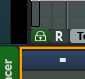

The sequencer lets you select when a block starts playing.
Add a new sequencer track (seqtrack) by clicking one of the "+ ..." buttons in the lower left corner.
Seqblocks:
Move a seqblock with the mouse.
To move several seqblocks, either mark a rectangle, or press Ctrl and click on the seqblocks you want to move.
To quickly copy a seqblock, hold the Alt key and drag a seqblock.
Double-click a seqblock to open a GUI for it.
Use the popup menu to add effect automations, tempo automations, loop start and end positions, and other operations.
For information about the different types of fade in and fade out shapes, look in the Ardour manual here.
Drag seqtrack number to change track order.
Insert several audio files into their own separate seqtracks by right-clicking inside an audio seqtrack and select "Insert audio file(s)".
Timeline
Left-click the Grid: Bar button to enable/disable grid.
Right-click the Grid: Bar button to set grid type.
Double-click a marker to loop between that marker and the next marker. (If you double-click the last marker, you will be asked to rename that marker instead)
Recording
To record audio, click the "R" button in the seqtrack header of audio seqtracks, and start playing. To configure number of audio channels and where to get audio from, right-click the "R" button. You might also want to select beforehand when to start and stop recording, and you can do this by by right-clicking in the seqblock area and select the "Punch in/out" option under "Sequencer timeline".
Right-click the "R" button in a seqtrack header to set recording options.
Tips
The quickest way to start and stop playing is to use the mouse scroll wheel. Scroll up to play, scroll down to stop.
The quickest way to scroll the seqtracks up or down is to hold shift and use the mouse scroll wheel. You can also use the mouse scroll wheel inside the track headers, without having to press shift.
To prevent radium from automatically changing the current block in the editor when the mouse pointer is above an editor seqblock, enable the padlock checkbox in the lower left corner of the editor: .
Another way to enable this option is to right-click an editor seqblock and enable "Forced as current block".